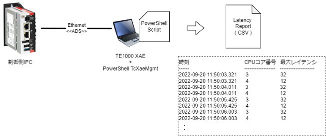
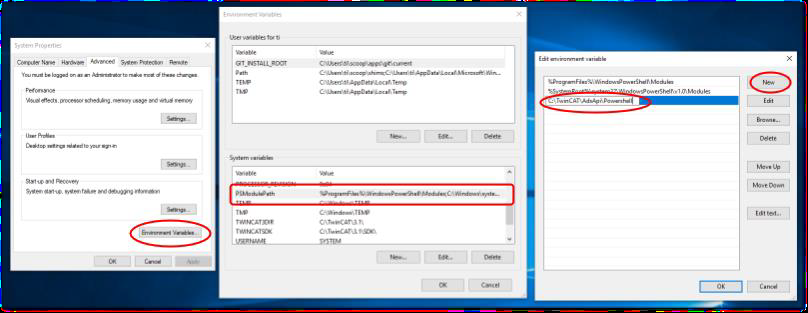
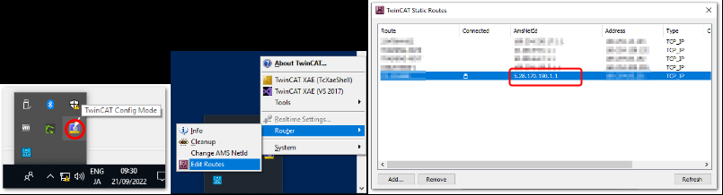
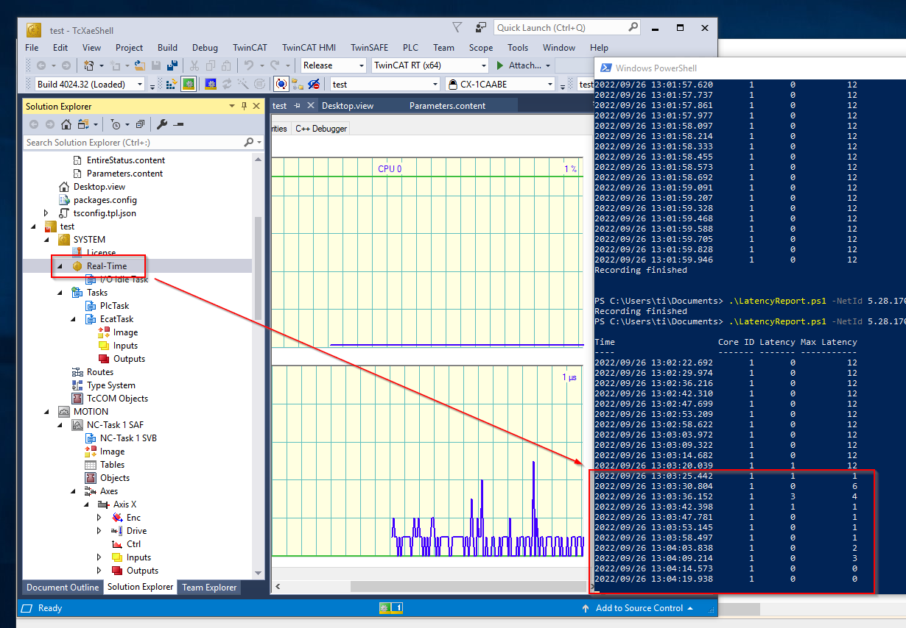

システムレイテンシ計測・評価方法
ここではレイテンシを長期的に計測し、許容できない処理の遅れが無いか監視し、データを収集するための手順について示します。
つぎに示すライセンス、および機器を構成した上で、本書で示すPowerShellスクリプトを実行することで、一定の周期でIPC上の各リアルタイムコアのレイテンシの最大値のトレンドをCSVファイルに保存することができます。
必要ライセンス
構成
- Windows Powershell5.1 以上
- Ver 3.1.4024.10 以上のバージョンのTwinCATTE1000XAE

Info
PowerShellツールを動作させるレイテンシログ収集用のPCでは各種PowerShellモジュールをインターネット経由でインストールするため、インターネット接続が必要です。
Warning
制御しているIPC上に TcXaeMgmt をインストールしてログ収集することも可能です。この場合もセットアップ時にIPCのインターネット接続が必要になります。ただし、IPCではTwinCAT XAR 動作のためにWindows Defenderを有効にする事ができませんので、セキュリティ上のリスクがある事をご承知おきください。
準備
TcXaeMgmtのインストール
インターネットに接続された環境で、管理者モードでPowerShellを起動してください。以下のコマンドを順に入力します。
-
スクリプト実行を許可する
PS> Set-ExecutionPolicy RemoteSigned -
PowershellGetモジュールの最新版をインストール
PS> Install-Module PowershellGet -Force -
TcXaeMgmtツールのインストール
PS> Install-Module TcXaeMgmt -Force -AcceptLicense -SkipPublisherCheck -
完了したら下記の通りインストールできたのかを確認する
下記の出力結果にある。Directory:以後に記載されたパスを記憶する。次の手順でパスを登録する必要がある。PS > Get-Module TcXaeMgmt –ListAvailable Directory: C:\Users\**** ModuleType Version Name ExportedCommands ---------- ------- ---- ---------------- Script 6.0.57 TcXaeMgmt {Add-AdsRoute, Close-TcSession, Copy-AdsFile, Get-AdsRoute... -
環境変数“PSModulePath” へインストールされたTcXaeMgmtのパスを登録。
ControlPanelのSystem Propertiesから環境変数の設定項目を探し、System Variableの中からPSModulePathを選択。無け ればEdit..ボタンを押して上記パスのエントリーをNewで追加。
ツールの実行
-
レポートツールの展開
LatencyReport.ps1を適当な場所へ配置 -
配置した場所でPowerShellを起動してコマンド実行
PS> LatencyReport.ps1 -NetId 5.28.170.190.1.1 -wait_time 100 -stop_time "2022-09-20 12:00:00"NetId- 観測したいXARが動作するPLCのAMS NetIDを指定する。省略した場合は同一ホスト上のXAR(“127.0.0.1.1.1”と同じ)に接続。ターゲットIPCのNetIdは次の通りEdit Routesの一覧から参照

wait_time- 観測後、この指定ミリ秒経ってから次の計測を行う。省略した場合は待機なし（0ミリ秒）として、即次の計測を行う。（例：10秒なら10000）
stop_time- この指定時刻になったら計測を終了する。省略した場合は10秒後の時刻が指定される。
-
stop_timeで指定した時間まで、wait_timeの時間間隔で以下のフォーマットでコンソール画面への表示と、CSVファイルへの出力が行われる。- コンソール画面表示
- 以下の通り処理が進む毎に表示される。
PS > ./LatencyReport.ps1 –NetId 169.254.230.17.1.1 –stop_time "2022-09-21 10:42:21" Time Core ID Latency Max Latency ---- ------- ------- ----------- 2022/09/26 11:58:45.667 1 0 8 2022/09/26 11:58:46.064 1 0 8 2022/09/26 11:58:46.178 1 0 8 2022/09/26 11:58:46.295 1 0 8 2022/09/26 11:58:46.420 1 4 8 2022/09/26 11:58:46.545 1 0 8 2022/09/26 11:58:46.665 1 0 8 2022/09/26 11:58:46.782 1 0 8 2022/09/26 11:58:46.905 1 0 8 2022/09/26 11:58:47.024 1 0 8 Recording finished - 保存されるCSVフォーマット
latency_<<AMSNetID>>_YYMMDDhhmmss.csv- 例）
latency_169.254.230.17.1.1_220921104221.csv
Core ID: 割り当てたリアルタイムコア番号Latency: 取得した瞬間のレイテンシーMax Latency: Run modeになってからの最大レイテンシーNote
Max Latencyの単位はμsです。
Warning
Max Latencyの値について
TwinCAT XAEにてReal TimeのOnlineタブを開くと、Latencyグラフにプロットするたびに最大値の記憶をリセットし、前回プロットしたときからの最大値に更新されます。Real Timeウィンドウ閉じると最大値リセットが止まります。 